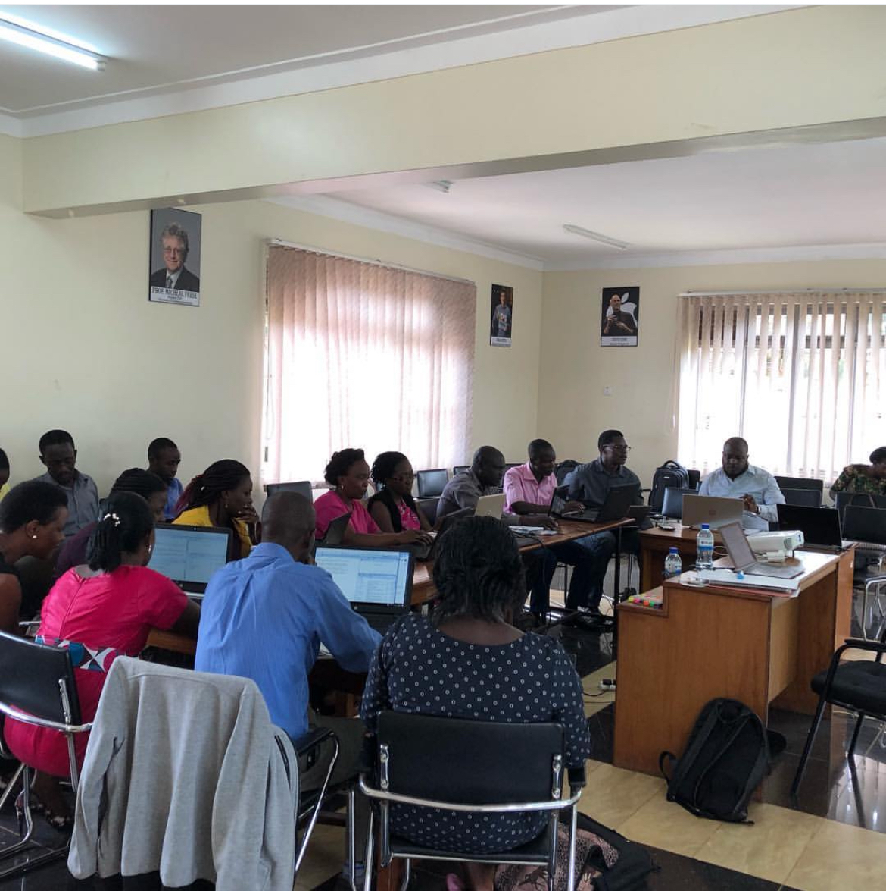
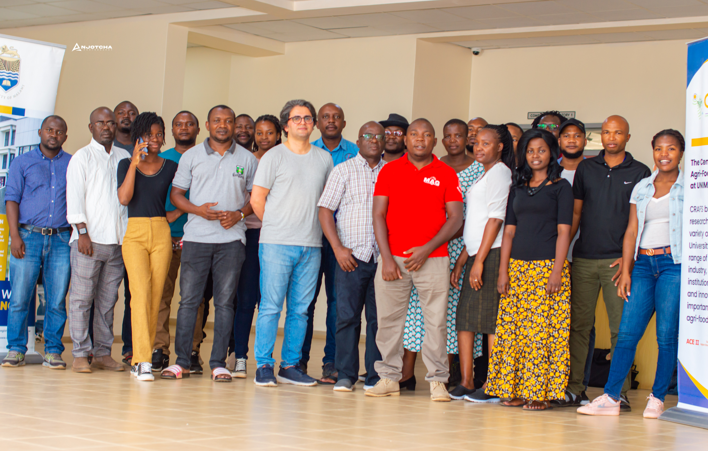
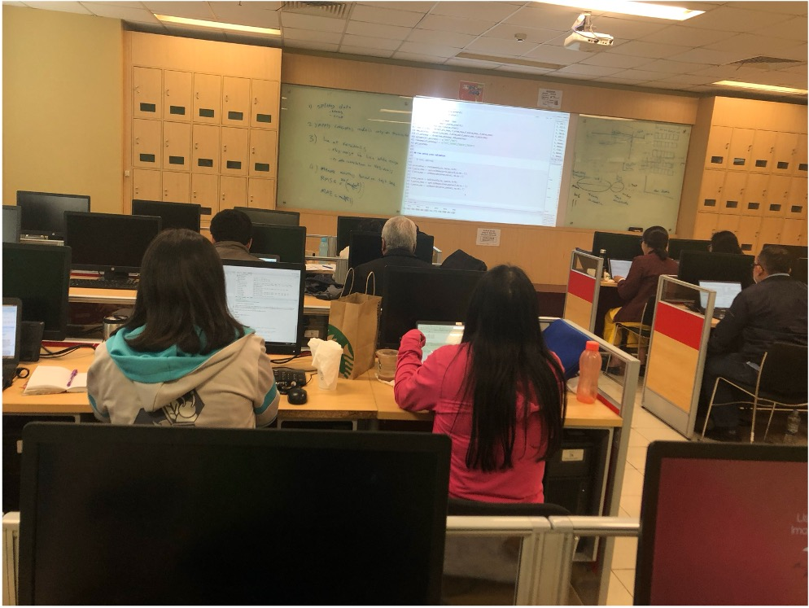
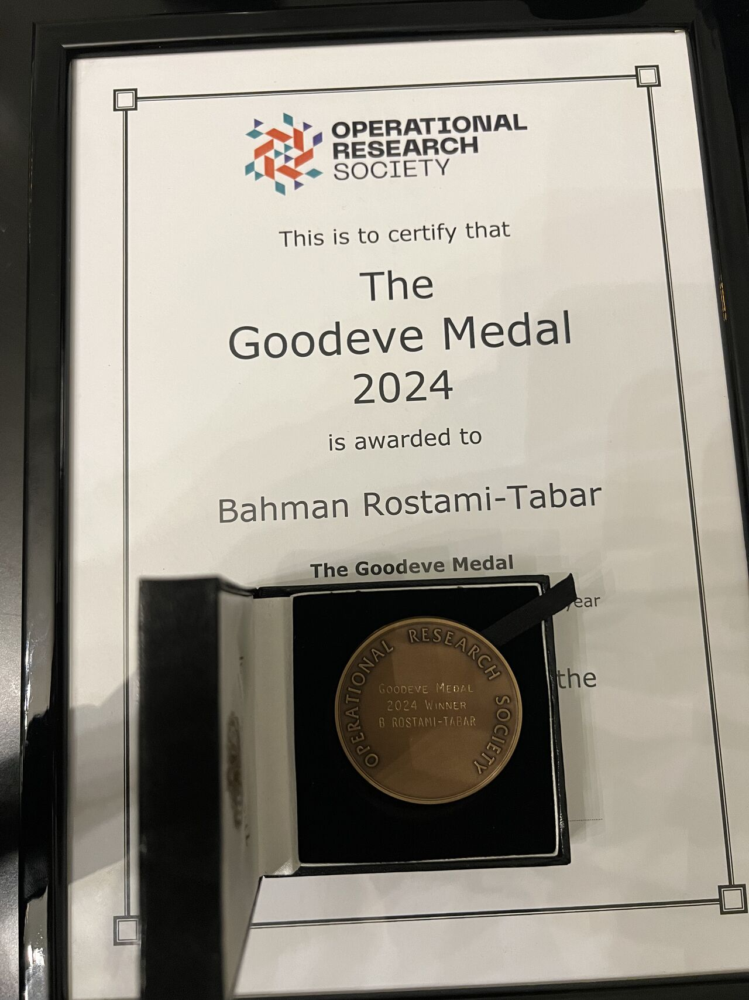
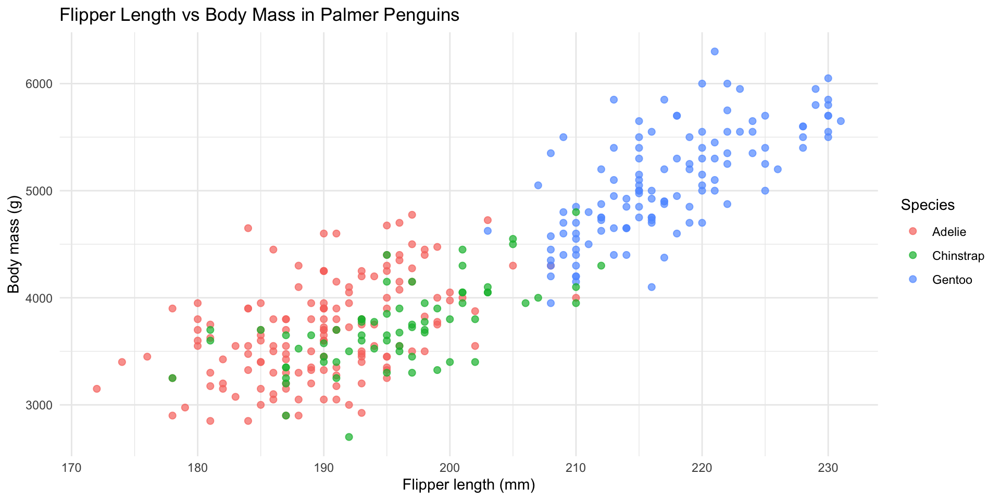
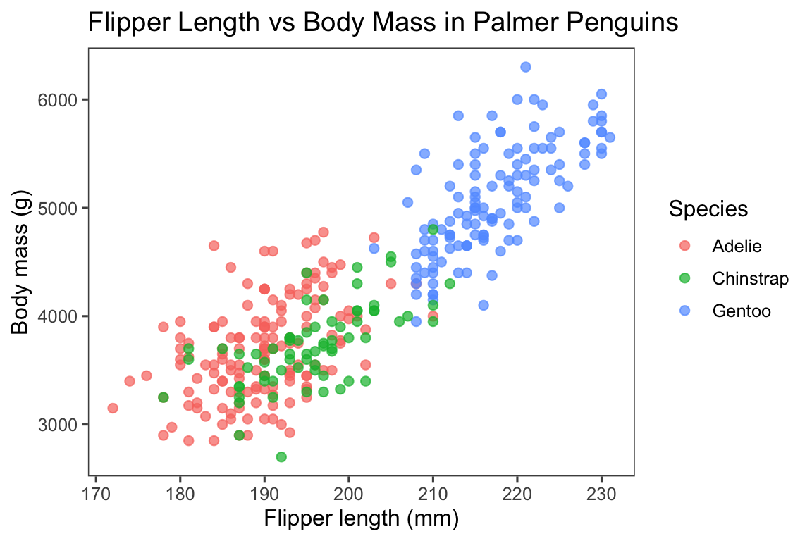
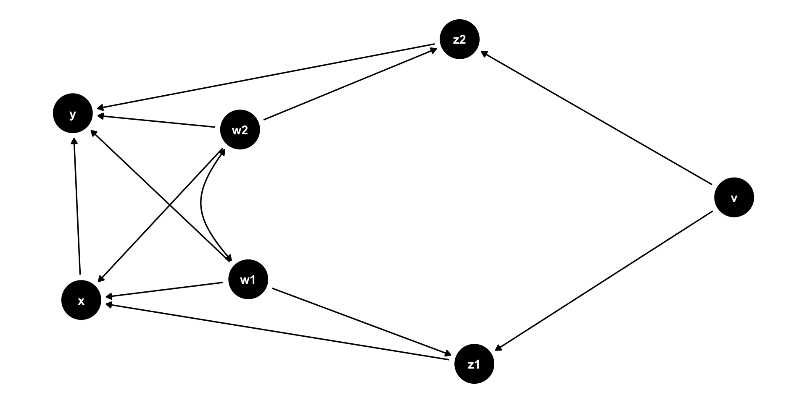
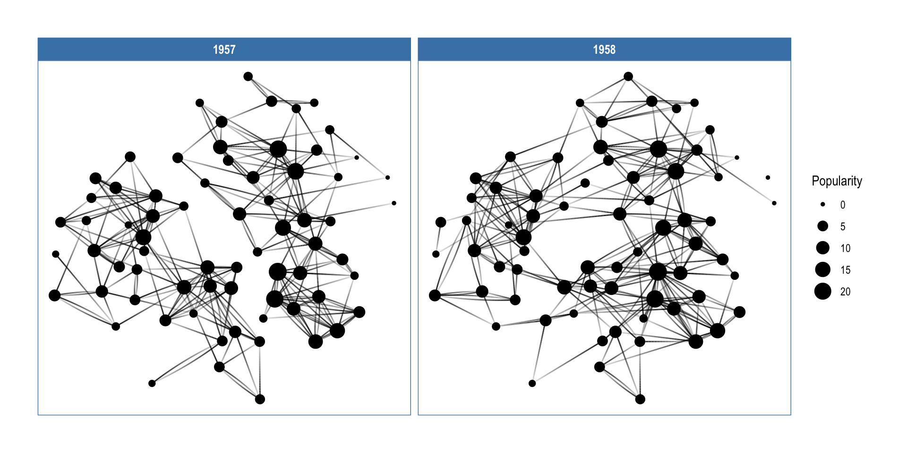

Making Slides with Quarto
Data Lab
Data Lab for Social Good, Cardiff Business School, Cardiff University
Create sldies
Create slides using ##
create a slide using ## for slide title
Section or special slide
Live Demo
Data visualisation best practices
Data visualisation best practices
Detailed, accurate, numbers?
Or the big, picture message?
Craete lists
create bulleted list
create a list using -, +, or *
- first bullet
- second bullet
- third bullet
create ordered ist
- first
- second
- third
Multile columns
Using multile columns
sometimes you want to create multile columns in a slide:
- use when you want to have a left and right column
- Use whn you wnat to have an image in one side and text in the other side
- when you want to have a formula on one side and explanation on the other side
- when you want to have code on one side and output on the other side
- when you want to have a plot on one side and explanation on the other side
- when you want to have any content on one side and any content on the other side
- when you want to have multiple images each in one column
- you can also create multope columns with more than two columns using the same syntax
Craete multile columns
- use
:::: {.columns}to start the columns - use
::: {.column width="30%"}to start the left column, and specify the width - use
::: {.column width="70%"}to start the right column, and specify the width - use
:::to end each column - use
::::to end the columns
Delay showing content
Slide with a pause using ...
content before the pause
content after the pause
Using Incremental with lists
- Understanding UI components of Positron
- Create projects in Positron
- Describe three main tasks
- Describe three things to know about R/Python
- Install and load packages
Using Fragment with anything
You can use fragment to delay anything showing, including images, text, formulas, code, plots, etc.
Add footnotes and asides
Footnote
- Understanding UI components of Positron 1
- Create projects in Positron
- Describe three main tasks
- Describe three things to know about R/Python
- Install and load packages
Aside
- Understanding UI components of Positron
- Create projects in Positron
- Describe three main tasks
- Describe three things to know about R/Python
- Install and load packages
Include images
use full background image
Exploratory work
Read the book: https://dfep.netlify.app/
Outline
- Understanding UI components of Positron
- Create projects in Positron
- Describe three main tasks
- Describe three things to know about R/Python
- Install and load packages
4 images using layout-ncol
This is the main slide, with some desription of events
This is the main slide, with some desription of events
4 images using 4 columns
This is the main slide, with some desription of events
This is the main slide, with some desription of events
3 images using layout-ncol
This is the main slide, with some desription of events
3 images using 3 columns
This is the main slide, with some desription of events
Grid- many images (use max 6 per slide)
Image Grid–use layout-col=




Image Grid - using columns
Image Grid–use layout-col=
Image in left or right with text
Sometimes you want to have an image on the left or right side of the slide with text on the other side, you can do it using the following syntax

agenda, learning outocmes/objectives
- Describe the forecasting workflow
- Identify factors affecting forecastability
- Describe forecasting methods
- Fit forecasting models using fable
- Produce forecasts using fable
- Evaluate forecast accuracy and residual diagnostics
- Visualise forecast distributions
image right
- Understanding UI components of Positron
- Create projects in Positron
- Describe three main tasks in data analytics using R/Python and how to perform them
- Describe three important things to know about R/Python
- Install and load packages
My first independent ersearch
How temporal aggregation (both overlapping and on-overlapping) affects forecasting accuracy considering autocorrelated series with limited length.

Footers
include footer
you can include a footer in all slides by adding
footer: "Custom footer text" in YAML
Use a different footer in sides
in the YAML you can provide a footer that gos to all slides, if you want to change it in a aprticualr sldie, you ned to do this:
Impact of length of data on forecst accuracy
Scroorable slides
this is useful when you have a lot of content in a slide and you want to scroll it during the presentation
Scroorable
- Use font colors when needed to
- Use font colors when needed to
- Use font colors when needed to
- Use font colors when needed to
- Use font colors when needed to
- Use font colors when needed to
- Use font colors when needed to
- Use font colors when needed to
- Use font colors when needed to
- Use font colors when needed to
- Use font colors when needed to
- Use font colors when needed to
- Use font colors when needed to
- Use font colors when needed to
- Use font colors when needed to
- Use font colors when needed to
- Use font colors when needed to
- Use font colors when needed to
- Use font colors when needed to
- Use font colors when needed to
- Use font colors when needed to
Live demo
Where do cats go?
How fast do cats run?
How long do they spend indoors?
Does that change as they get older?
Change font color
Font color
Use font colors when needed to emphasize key points
Hello R community,
This Bahman Rostami-Tabar from Data Lab for Social Good, Cardiff Business School, Cardiff University.
Use font colors when needed to emphasize key points
Hello R community,
This Bahman Rostami-Tabar from Data Lab for Social Good, Cardiff Business School, Cardiff University.
Use font colors when needed to emphasize key points
Hello R community,
This Bahman Rostami-Tabar from Data Lab for Social Good, Cardiff Business School, Cardiff University.
Make content of a slide smaller
Font color
Use font colors when needed to emphasize key points
Hello R community,
This Bahman Rostami-Tabar from Data Lab for Social Good, Cardiff Business School, Cardiff University.
Use font colors when needed to emphasize key points
Hello R community,
This Bahman Rostami-Tabar from Data Lab for Social Good, Cardiff Business School, Cardiff University.
Use font colors when needed to emphasize key points
Hello R community,
This Bahman Rostami-Tabar from Data Lab for Social Good, Cardiff Business School, Cardiff University.
Code and its output
In the following examples, we show how to control code output display in revealjs presentations using Quarto. Please onserve different options for code output location.
Code folded

Figure 1
column

column-fragment

slide
slide

fragment

default

Notes with code output
Meanwhile, Allison keeps playing with the penguins
And plotting with the penguins
And looking at more penguin pictures
Aligns eerily well with iris data

Highlight specific consecutive line code
Highlgiht seperate lines
Highlgiht several lines progressively
Panels and tabsets
Panels and tabsets
Tables
Multiple chocie fror tables in R: kableExtra, gt, flextable, DT, reactable
Manual tables
# A tibble: 3 × 3
Species Count Avg_Bill_Length_mm
<chr> <dbl> <dbl>
1 Adelie 152 38.8
2 Chinstrap 68 48.3
3 Gentoo 124 46 Table’s output from code
mpg cyl disp hp drat wt qsec vs am gear carb
Mazda RX4 21.0 6 160.0 110 3.90 2.620 16.46 0 1 4 4
Mazda RX4 Wag 21.0 6 160.0 110 3.90 2.875 17.02 0 1 4 4
Datsun 710 22.8 4 108.0 93 3.85 2.320 18.61 1 1 4 1
Hornet 4 Drive 21.4 6 258.0 110 3.08 3.215 19.44 1 0 3 1
Hornet Sportabout 18.7 8 360.0 175 3.15 3.440 17.02 0 0 3 2
Valiant 18.1 6 225.0 105 2.76 3.460 20.22 1 0 3 1
Duster 360 14.3 8 360.0 245 3.21 3.570 15.84 0 0 3 4
Merc 240D 24.4 4 146.7 62 3.69 3.190 20.00 1 0 4 2
Merc 230 22.8 4 140.8 95 3.92 3.150 22.90 1 0 4 2
Merc 280 19.2 6 167.6 123 3.92 3.440 18.30 1 0 4 4
Merc 280C 17.8 6 167.6 123 3.92 3.440 18.90 1 0 4 4
Merc 450SE 16.4 8 275.8 180 3.07 4.070 17.40 0 0 3 3
Merc 450SL 17.3 8 275.8 180 3.07 3.730 17.60 0 0 3 3
Merc 450SLC 15.2 8 275.8 180 3.07 3.780 18.00 0 0 3 3
Cadillac Fleetwood 10.4 8 472.0 205 2.93 5.250 17.98 0 0 3 4
Lincoln Continental 10.4 8 460.0 215 3.00 5.424 17.82 0 0 3 4
Chrysler Imperial 14.7 8 440.0 230 3.23 5.345 17.42 0 0 3 4
Fiat 128 32.4 4 78.7 66 4.08 2.200 19.47 1 1 4 1
Honda Civic 30.4 4 75.7 52 4.93 1.615 18.52 1 1 4 2
Toyota Corolla 33.9 4 71.1 65 4.22 1.835 19.90 1 1 4 1
Toyota Corona 21.5 4 120.1 97 3.70 2.465 20.01 1 0 3 1
Dodge Challenger 15.5 8 318.0 150 2.76 3.520 16.87 0 0 3 2
AMC Javelin 15.2 8 304.0 150 3.15 3.435 17.30 0 0 3 2
Camaro Z28 13.3 8 350.0 245 3.73 3.840 15.41 0 0 3 4
Pontiac Firebird 19.2 8 400.0 175 3.08 3.845 17.05 0 0 3 2
Fiat X1-9 27.3 4 79.0 66 4.08 1.935 18.90 1 1 4 1
Porsche 914-2 26.0 4 120.3 91 4.43 2.140 16.70 0 1 5 2
Lotus Europa 30.4 4 95.1 113 3.77 1.513 16.90 1 1 5 2
Ford Pantera L 15.8 8 351.0 264 4.22 3.170 14.50 0 1 5 4
Ferrari Dino 19.7 6 145.0 175 3.62 2.770 15.50 0 1 5 6
Maserati Bora 15.0 8 301.0 335 3.54 3.570 14.60 0 1 5 8
Volvo 142E 21.4 4 121.0 109 4.11 2.780 18.60 1 1 4 2Model output tables
# A tibble: 13 × 5
term estimate std.error statistic p.value
<chr> <dbl> <dbl> <dbl> <dbl>
1 (Intercept) -3188. 14.5 -220. 0
2 carat 8472. 12.6 672. 0
3 cut.L 714. 22.5 31.7 1.22e-218
4 cut.Q -335. 19.8 -16.9 1.08e- 63
5 cut.C 188. 17.2 10.9 7.34e- 28
6 cut^4 1.66 13.8 0.121 9.04e- 1
7 clarity.L 4012. 33.9 118. 0
8 clarity.Q -1822. 31.9 -57.2 0
9 clarity.C 918. 27.3 33.6 6.23e-245
10 clarity^4 -430. 21.8 -19.7 4.45e- 86
11 clarity^5 257. 17.8 14.4 4.14e- 47
12 clarity^6 26.9 15.5 1.73 8.33e- 2
13 clarity^7 187. 13.7 13.6 2.51e- 42Read tables from CSV
# A tibble: 1,704 × 6
country continent year lifeExp pop gdpPercap
<chr> <chr> <dbl> <dbl> <dbl> <dbl>
1 Afghanistan Asia 1952 28.8 8425333 779.
2 Afghanistan Asia 1957 30.3 9240934 821.
3 Afghanistan Asia 1962 32.0 10267083 853.
4 Afghanistan Asia 1967 34.0 11537966 836.
5 Afghanistan Asia 1972 36.1 13079460 740.
6 Afghanistan Asia 1977 38.4 14880372 786.
7 Afghanistan Asia 1982 39.9 12881816 978.
8 Afghanistan Asia 1987 40.8 13867957 852.
9 Afghanistan Asia 1992 41.7 16317921 649.
10 Afghanistan Asia 1997 41.8 22227415 635.
# ℹ 1,694 more rowsUsing emojis
June 2020 ~4 months into lockdown ☣️
June 4: 🐦 In excitement, Allison Horst tweets about the penguins data
📦 Alison asks “Do you wanna build a package?”
❓Allison deletes tweet to sort out license
1 day later: 🔏 Allison emails Kristen about use & license
3 days later (June 8): 🚀 palmerpenguins power team assembles for the first time!
Same day (June 8): 🏆 Allison Horst tweets (again) — with clear license info
45 days later (July 23): 🎁 available on CRAN
Equations
Model
\[ y = \beta_0 + \beta_1 x_1 + \beta_2 x_2 + \varepsilon \]
\(y\) is the response (outcome) variable you want to explain or predict.
\(x_1\) and \(x_2\) are predictor (explanatory) variables.
\(beta_0\) is the intercept term (baseline level of \(y\) when predictors are zero).
\(\beta_1\) and \(\beta_2\) are coefficients that quantify how \(y\) changes with \(x_1\) and \(x_\), holding the other predictor fixed.
\(\varepsilon\) is the error term capturing noise and unobserved factors.
\[ \begin{aligned} \min_{\boldsymbol{x} \in \mathbb{R}^n} \quad & \mathbb{E}_{\boldsymbol{\xi}}\!\left[ f(\boldsymbol{x}, \boldsymbol{\xi}) + \lambda \, \|\boldsymbol{x}\|_1 \right] \\[0.6em] \text{s.t.} \quad & g_i(\boldsymbol{x}) \le 0, \quad i = 1, \dots, m, \\[0.4em] & \mathbb{P}\!\left( h_j(\boldsymbol{x}, \boldsymbol{\xi}) \le 0 \right) \ge 1 - \alpha, \quad j = 1, \dots, k \end{aligned} \]
- \(\boldsymbol{x}\): Decision variables to optimize.
- \(\boldsymbol{\xi}\): Random variables representing uncertainty.
- \(f(\boldsymbol{x}, \boldsymbol{\xi})\): Objective function to minimize.
- \(\lambda \, \|\boldsymbol{x}\|_1\): Regularization
- \(g_i(\boldsymbol{x})\): Deterministic constraints.
- \(h_j(\boldsymbol{x}, \boldsymbol{\xi})\): Stochastic constraints.
- \(\alpha\): Acceptable risk level for constraint violations.
Quantile regression
\[ \begin{aligned} \hat{q}_{\tau}(x) &= \arg\min_{q \in \mathbb{R}} \sum_{t=1}^{T} \rho_{\tau}\!\left(y_t - q(x_t)\right), \\ \rho_{\tau}(u) &= u\left(\tau-\mathbf{1}\{u<0\}\right) \end{aligned} \]
- \(y_t\) is the observed target at time \(t\), and \(x_t\) is the feature vector
- \(\tau \in (0,1)\) is the quantile level;
- \(\hat{q}_{\tau}(x)\) is the forecasted \(\tau\)-quantile of \(Y \mid X=x\), i.e., a probabilistic forecast rather than a single point estimate.
- \(\rho_{\tau}(u)\) is the pinball (check) loss.
- \(\mathbf{1}\{u<0\}\) is an indicator equal to 1 when the residual is negative, shaping the asymmetry of the loss.
- \(T\) is the number of training observations used to fit the forecasting model.
Speaketr notes
Speaker notes
You can include your notes in the sldie whtout showin them in the presnetation! this is soemntmes helpful as begineer to remind yourself what key messages you want to say in the sdlie
Add a countdown timer
Your Turn!
In small groups, discuss what is good about this chart.
What is bad about it?
Content in different sizes
45%
Percentage of adults who have below primary school level numeric skills.
45%
Percentage of adults who have below primary school level numeric skills.
45%
Percentage of adults who have below primary school level numeric skills.
3,000,000
Number of people in the UK with some form of colour vision deficiency.
Put content in middle and center
Birth of two ideas: Democratising Forecasting and Forecasting for Social Good
Include website, URL
Full screen
Include URL with preview link
preview-link
preview-link
Background video
Any questions or comments? 💬

background iframe
Systems Thinking
Celebrate
Star
Snow
Snow
Callout
Callouts
Note
This is an example of a callout with a title.
Important
This is an example of a callout with a title.
Warning
This is an example of a callout with a title.
Tip with Title
This is an example of a callout with a title.
Tip with Title
This is an example of a callout with a title.
Expand To Learn About Collapse
This is an example of a ‘folded’ caution callout that can be expanded by the user. You can use collapse="true" to collapse it by default or collapse="false" to make a collapsible callout that is expanded by default.
Algorithms
Forecasting Pipeline
Algorithm: Probabilistic Demand Forecasting
- Collect historical demand data (y_t)
- Construct feature matrix (X_t)
- Lagged demand
- Calendar effects
- External covariates
- Lagged demand
- Estimate quantile regression model
- Generate predictive quantiles
- Evaluate forecast accuracy
Diagrams
Mermaid Diagram
you may use Mermaid editor live
quadrantChart
title Reach and engagement of campaigns
x-axis Low Reach --> High Reach
y-axis Low Engagement --> High Engagement
quadrant-1 We should expand
quadrant-2 Need to promote
quadrant-3 Re-evaluate
quadrant-4 May be improved
Campaign A: [0.3, 0.6]
Campaign B: [0.45, 0.23]
Campaign C: [0.57, 0.69]
Campaign D: [0.78, 0.34]
Campaign E: [0.40, 0.34]
Campaign F: [0.35, 0.78]
Graphviz
you may Use Graphviz Online Editor
DiagrammeR
causal directed acyclic graphs

Use ggraph

Reference sldie
References
Include invivisule slide
soemtimes you want to include a slide that is not counted in the slide number and is not shown in the slide overview, you may have some detauls at the end, in case useful in Q/A, etc, you can do it using the following syntax